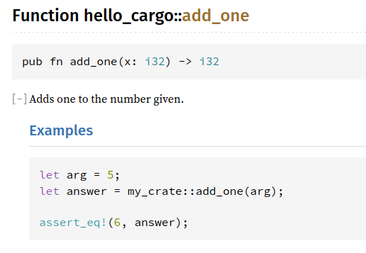

A new language bringing features of modern programming languages to systems
…with a focus on safety, speed, and concurrency, and zero-cost abstractions (from C++’s zero-overhead principle).
On Firefox, you can add this as a keyword bookmark.
Use Rustup.
It’s common to want to use different versions of the compiler.
Rustup also helps you install new targets (to cross-compile).
New features start off in Unstable Rust and “cook” for a while.
It is only possible to use unstable features using the Nightly build.
Also, you may need to test your project on older versions at times.
Rust is based on LLVM, and so cross-compilation is supported out-of-the-box.
But to target a target, you need to have the standard library for that target. Rustup helps you install those additional things.
fn main() {
println!("Hello world!");
}Compile and run
$ rustc helloworld.rs
$ ./helloworld
Hello world!Cargo is Rust’s build system and package manager.
$ cargo new --bin hello_cargo
$ cd hello_cargoCargo.toml
Cargo.toml is the package metadata file (akin to e.g. package.json, etc).
The format is TOML.
Cargo.toml[package]
name = "hello_cargo"
version = "0.1.0"
authors = ["Your Name <you@example.com>"]
edition = "2018"
[dependencies]Edit your program: src/main.rs
fn main() {
println!("Hello Cargo!");
}Compile and run
$ cargo build
$ target/debug/hello_cargo
# Or...
$ cargo runUntil we start using Cargo features, you can either call rustc directly, or use Cargo.
fn main() {
let x = true;
let mut y: u32 = 1u32;
if x {
println!("{}", y);
y += 1;
}
while y < 10 {
y += 1;
println!("{}", y);
}
}fn add(i: i32, j: i32) -> i32 {
i + j // comment
}
/* comment */
/* /* nested comment */ */
fn main() { println!("{}", add(3, 5)); }The last expression in a block is returned.
printlnprintln is a macro.
Macros are invoked using macro!(...) (note the !).
(We’ll go into macros in more detail later.)
Of note are {}, which is the generic display,
and {:?}, which is the debug print specifier.
(We’ll demonstrate the power of {:?} later.)
Boolean: bool: true or false
Integers: {i, u}{8, 16, 32, 64, 128, size}
e.g. 1, 1u64; default i32
Floats: f32, f64 e.g 2f64, 2., 2.0
default f64
Unicode character: char e.g. 'a', '🤔'
Unit type: ()
Binary literals: 0b010101
Octal literals: 0o25
Hex literals: 0x15
Number separators: 123_456_789
Strings: "abc"
Raw strings:
r#"hello! I am a raw string
I can contain any number of " and # and r#" and //
and \ but I end the moment we have "# // this is a commentlet x: (i32, i32, i32) = (1, 2, 3);
let y: [i32; 3] = [1, 2, 3];
let z = [0u32; 500]; // array of 500 0u32Notice that the length of an array is part of its type.
Most commonly used to convert between numeric types:
let x: i32 = 5;
x as i16Rust is an expression-based language.
Most things are expressions, including if, and loops.
The only thing that is a statement is the let statement.
All blocks are expressions.
println!("{:?}", {
let mut y = 0;
while y < 10 { y += 1; }
y
});Blocks evaluate to the last expression evaluated.
; converts an expression to a statement (which is of type ()), discarding the value.
println!("{:?}", {
let mut y = 0;
while y < 10 { y += 1; }
y;
});if expression [B]if is an expression.
let x = true;
println!("{}", if x { 1 } else { 0 });Note that both branches must evaluate to the same type (which could be ()).
while loop [B]The while loop is an expression evaluating to ().
let mut x = 0;
println!("{:?}", while x < 10 { x += 1; });for loop [B]The for loop is an expression evaluating to ().
let x = [1, 2, 3];
for y in &x {
println!("{}", y);
}let mut x = 0;
println!("{}", loop {
x += 1;
if x > 10 { break x; }
});loop expressions can evaluate to a non-() value!
let x = [1, 2, 3, 4, 5];
for i in 0..x.len() {
println!("{}", x[i]);
}
for i in 0..=4 {
println!("{}", x[i]);
}Rust macros are not like CPP macros.
They operate on the AST level at compile-time.
Macro invocations generally look like macro!(...).
Macros operate on the AST level at compile-time.
println!("Hello! {0} in hex is {0:02X}", 15);This means that format strings are actually parsed and type-checked at compile-time,
println!("Hello! {0} in hex is {0:02X}", "Hello");
// error[E0277]: the trait bound `str: std::fmt::UpperHex`
// is not satisfied…and are expanded out into function calls to produce the string you need.
To get you familiar with the syntax:
Implement FizzBuzz. In C: (i.e. translate this to Rust)
int main() {
for (int i = 1; i <= 100; ++i) {
int m3 = i % 3 == 0, m5 = i % 5 == 0;
if (m3 || m5) {
printf("%s%s\n", m3 ? "Fizz" : "", m5 ? "Buzz" : "");
} else {
printf("%d\n", i);
}
}
}fn main() {
for i in 1..=100 {
let m3 = i % 3 == 0; let m5 = i % 5 == 0;
if m3 || m5 {
println!("{}{}",
if m3 { "Fizz" } else { "" },
if m5 { "Buzz" } else { "" });
} else {
println!("{}", i);
}
}
}(Note: this isn’t the most idiomatic Rust.
We’ll get there.)
Ownership is Rust’s way of memory management.
StringTo exemplify ownership, let’s look at the String type: a resizable string buffer.
It is akin to StringBuilder in Java/C#, or std::string in C++.
let mut s = String::from("hello");
s.push_str(", world!");
println!("{}", s);This prints “hello, world!”.
StringString is internally a pointer to a heap buffer and a string length (plus the length of the buffer).
When we create a new String, the function we call allocates this buffer for us.
But how do we then deallocate (free) this buffer?
{
let mut s = String::from("hello");
// do things with s
} // the String owned by s is dropped
s owns the String. When s goes out of scope, the value it points to is dropped.
When a value is dropped, a destructor can be called. In the case of String, it frees the heap allocation.
This is essentially RAII in C++.
{
let s1 = String::from("hello");
let s2 = s1;
}When s1 and s2 go out of scope, what happens?
When we do s2 = s1, the String is moved into s2. s1 is now invalid.
{
let s1 = String::from("hello");
let s2 = s1;
println!("{}", s1);
// error[E0382]: borrow of moved value: `s1`
}This is what is unique about Rust: values have unique ownership; this eliminates use-after-frees and double-frees.
cloneinglet s1 = String::from("hello");
let s2 = s1.clone();
println!("{}", s1);clone is a method implemented by String that makes a deep copy.
let a = 1;
let b = a;
println!("{}", a);Scalar primitives (integers, floats, characters) implement the Copy trait.
(We’ll talk about traits later.)
dropIt is possible to manually drop a value:
let s1 = String::from("hello");
drop(s1);Quick question: How is drop implemented?
Suppose we want a function that does work on a String.
fn calc_len(x: String) -> usize {
x.len()
}
fn main() {
let x = String::from("hello");
println!("{}", calc_len(x));
println!("{}", x);
// error[E0382]: borrow of moved value: `x`
}fn calc_len(x: String) -> (String, usize) {
let len = x.len();
(x, len)
}
fn main() {
let x = String::from("hello");
let y = calc_len(x);
let x = y.0;
let len = y.1;
println!("{}", x);
println!("{}", len);
}Not very convenient.
Let’s pass in a reference instead.
fn calc_len(x: &String) -> usize {
x.len()
}
fn main() {
let x = String::from("hello");
println!("{}", calc_len(&x));
println!("{}", x);
}fn change(some_string: &String) {
some_string.push_str(", world");
// error[E0596]: cannot borrow `*some_string` as mutable,
// as it is behind a `&` reference
}
fn main() {
let s = String::from("hello");
change(&s);
}Normal references are immutable.
fn change(some_string: &mut String) {
some_string.push_str(", world");
}
fn main() {
let mut s = String::from("hello");
change(&mut s);
}We need to make a mutable reference.
You can tell whether a method takes:
| the entire value | fn myfn(self) |
| a mutable reference | fn myfn(&mut self) |
| a reference | fn myfn(&self) |
fn main() {
let mut s = String::from("hello");
let mutref1 = &mut s;
let mutref2 = &mut s;
// error[E0499]: cannot borrow `s` as mutable
// more than once at a time
println!("{}", mutref1);
}fn main() {
let mut s = String::from("hello");
let mutref1 = &mut s;
let mut t = s;
// error[E0505]: cannot move out of `s`
// because it is borrowed
println!("{}", mutref1);
}fn main() {
let mut s = String::from("hello");
let mutref1 = &mut s;
let ref1 = &s;
// error[E0502]: cannot borrow `s` as immutable
// because it is also borrowed as mutable
println!("{}", mutref1);
}This solves data races.
It is possible to have aliasing and mutability using Cell/RefCell, or Mutex/RwLock for multithreaded scenarios.
These types do checks at runtime instead, in line with Rust’s philosophy: you opt-in to only what you need.
We’ve passed references to Strings.
What if we want a substring?
let s = String::from("hello world");
let hello: &str = &s[0..5];
let world = &s[6..11];
println!("{} {}", world.len(), world);&str is a fat pointer: like char *, but it tracks the length too.
The type of a string literal is &str *.
let s: &str = "Hello!";
println!("{} {}", s.len(), s);We can slice them too.
let s: &str = "Hello world!";
println!("{}", &s[..5]);* Almost.
You can slice arrays:
let arr: [u32; 5] = [1, 2, 3, 4, 5];
let slice: &[u32] = &arr[..3];
println!("{:?}", slice);The type of a slice is just &[T].
let r;
{
let x = 5;
r = &x;
// error[E0597]: `x` does not live long enough
}
println!("r: {}", r);x lives from line 3–6: its lifetime ends at line 6.
Therefore, any reference to x cannot be referenced past line 6.
We’ve eliminated dangling pointers.
Lifetimes are part of references’ types.
It is possible to name lifetimes, but we’ll only see how this is important later.
There is a special lifetime name static.
With that, we can give the full type of a string literal:
let x: &'static str = "Hello!";struct Bus {
number: String, interval: u32
}
fn get_route(num: &str) -> Bus {
Bus {
number: String::from(num), interval: 5
}
}
fn main() {
let route = get_route("A1");
println!("Got route: {}, interval {}",
route.number, route.interval);
}impling methodsContinuing from the previous example.
impl Bus {
fn arrive(&self) {
println!("{} has arrived", self.number);
}
}
fn main() {
let route = get_route("A1");
route.arrive();
}impl Bus {
fn with_number(self, new_num: &str) -> Bus {
Bus {
number: String::from(new_num),
..self
}
}
}
fn main() {
let route = get_route("A1").with_number("A2");
route.arrive();
}i.e. “static” methods
impl Bus {
fn of_number(num: &str) -> Self {
Bus {
number: String::from(num), interval: 5
}
}
}
fn main() {
let route = Bus::of_number("A1").with_number("A2");
route.arrive();
}Sum types, or algebraic data types.
enum Message {
Quit,
Move { x: i32, y: i32 },
Write(String),
ChangeColor(i32, i32, i32),
}fn handle(x: Message) {
// ... ???
}
fn main() {
let x = Message::ChangeColor(0, 0, 0);
handle(x);
}How do we know which variant we have?
match expression [B]let x = Message::ChangeColor(0, 0, 0);
fn handle(x: Message) {
match x {
Message::Quit => println!("Quitting."),
Message::Move { x, y } => println!("Moving to {}, {}", x, y),
Message::Write(str) => println!("Write {}", str),
Message::ChangeColor(r, g, b) => println!("Changing colour to {}, {}, {}", r, g, b)
};
}match is exhaustivefn handle(x: Message) {
match x {
Message::Quit => println!("Quitting."),
Message::Move { x, y } => println!("Moving to {}, {}", x, y),
Message::Write(str) => println!("Write {}", str),
// Message::ChangeColor(r, g, b) => println!("Changing colour to {}, {}, {}", r, g, b)
};
}Comment out that line. We get:
error[E0004]: non-exhaustive patterns:
`ChangeColor(_, _, _)` not coveredif let [B]If we only care about one case, we can use if let:
let x = Message::ChangeColor(0, 0, 0);
if let Message::ChangeColor(r, g, b) = x {
println!("Changing colour to {}, {}, {}", r, g, b);
}if let, match, and in fact let all work on patterns.
let (x, y) = (1, 2);
println!("{} {}", x, y);(x, y) is a tuple pattern.
You can do the same with enums and structs.
struct Bus {
number: String, interval: u32
}
impl Bus {
fn of_number(num: &str) -> Self {
Bus {
number: String::from(num), interval: 5
}
}
}
fn main() {
let route = Bus::of_number("A1");
let Bus { interval: int, .. } = route;
println!("Got interval {}", int);
}_ acts as a wildcard, since matches need to be exhaustive.
fn main() {
let x = 7;
match x {
1 => println!("one"),
3 => println!("three"),
5 => println!("five"),
7 => println!("seven"),
_ => (),
};
}Rewrite FizzBuzz with match.
fn main() {
for i in 1..=100 {
match (i % 3, i % 5) {
(0, 0) => println!("FizzBuzz"),
(0, _) => println!("Fizz"),
(_, 0) => println!("Buzz"),
(_, _) => println!("{}", i)
}
}
}Like structs, you can define methods on them.
enum Message {
Quit,
Move { x: i32, y: i32 },
Write(String),
ChangeColor(i32, i32, i32),
}
impl Message {
fn is_quit(&self) -> bool {
match self {
Message::Quit => true,
_ => false
}
}
}
fn main() {
println!("{}", Message::Quit.is_quit());
}Instead of null, Rust has the Option type.
struct Person {
name: Option<String>
}
impl Person {
fn greet(&self) {
match &self.name {
Some(name) => println!("Hello, {}", name),
None => println!("Hello, MISSINGNO.")
}
}
}
fn main() {
Person { name: None }.greet();
}Option has many methods. Let’s rewrite Person::greet.
struct Person {
name: Option<String>
}
impl Person {
fn greet(&self) {
println!("Hello, {}",
self.name.as_ref().map(String::as_str)
.unwrap_or("MISSINGNO."));
}
}
fn main() {
Person { name: None }.greet();
}Instead of exceptions, Rust has Result.
fn might_fail(inp: i32) -> Result<i32, &'static str> {
if inp % 3 == 0 {
Err("failed!")
} else {
Ok(inp)
}
}
fn main() {
match might_fail(3) {
Ok(result) => println!("Got {}", result),
Err(err) => println!("Failed: {}", err)
};
}Result is a monad, and has many methods too.
? [B]The ? operator helps to reduce boilerplate.
fn might_fail_2(inp: i32) -> Result<i32, &'static str> {
let x = might_fail(inp)?;
Ok(might_fail(2)? * x)
}
fn main() {
println!("{:?}", might_fail_2(3));
println!("{:?}", might_fail_2(4));
}panicking [B]Some functions are documented to panic on failure conditions.
On panic, your application will abort.
It is Rust’s way of failing fast, when there is no way to recover from an exceptional situation.
Rust has generics, akin to those in Java and C#.
We’ve already seen Option and Result.
Let’s see how they are defined.
enum Option<T> {
Some(T),
None,
}
enum Result<T, E> {
Ok(T),
Err(E),
}In impls:
struct Point<T> {
x: T,
y: T,
}
impl<T> Point<T> {
fn x(&self) -> &T {
&self.x
}
}You can impl a specific concrete type:
impl Point<f32> {
fn distance_from_origin(&self) -> f32 {
(self.x.powi(2) + self.y.powi(2)).sqrt()
}
}fn longest<'a>(x: &'a str, y: &'a str) -> &'a str {
if x.len() > y.len() {
x
} else {
y
}
}Traits are like interfaces in Java and C#. They’re closest to Haskell typeclasses.
trait Summary {
fn summarize(&self) -> String;
}impling traits [B]struct NewsArticle {
headline: String,
author: String,
content: String,
}
impl Summary for NewsArticle {
fn summarize(&self) -> String {
format!("{}, by {}", self.headline, self.author)
}
}
fn main() {
let art = NewsArticle {
headline: "Rust is great!".to_owned(),
author: "Graydon Hoare".to_owned(),
content: "Rust is really really good!".to_owned()
};
println!("{}", art.summarize());
}impling traitsYou can impl a trait you define on other types:
impl Summary for String {
fn summarize(&self) -> String {
(&self[..self.len().min(10)]).to_owned()
}
}
fn main() {
let x = String::from("Hellohello hello");
println!("{}", x.summarize());
}fn print_summary<T>(x: &T) where T: Summary {
println!("{}", x.summarize());
}
fn main() {
let x = String::from("Hellohello hello");
print_summary(&x);
}fn print_summary<T: Summary>(x: &T) {
println!("{}", x.summarize());
}
fn main() {
let x = String::from("Hellohello hello");
print_summary(&x);
}impls [B]use std::fmt::Display;
impl<T: Display> Summary for T {
fn summarize(&self) -> String {
let s = self.to_string();
(&s[..s.len().min(5)]).to_owned()
}
}
fn main() {
print_summary(&1234567890);
}Debug: Can be printed with {:?}Clone: Can be .clone()dCopy: Opt-out of move semantics#[derive]Some traits can be auto-derived:
#[derive(Debug, Clone)]
struct Bus {
number: String, interval: u32
}
fn main() {
let a2 = Bus {
number: "A2".to_owned(),
interval: 5
};
let a2_2 = a2.clone();
println!("{:?}", a2);
println!("{:?}", a2_2);
}Rust operators are defined using traits e.g. Add
use std::ops::Add;
#[derive(Debug, Clone, Copy)]
struct Point {
x: i32,
y: i32,
}
impl Add for Point {
type Output = Self;
fn add(self, other: Self) -> Self {
Self {
x: self.x + other.x,
y: self.y + other.y,
}
}
}
fn main() {
let p1 = Point { x: 5, y: 5 };
let p2 = Point { x: -5, y: 5 };
println!("{:?}", p1 + p2);
}fn add_one_v1 (x: u32) -> u32 { x + 1 }
let add_one_v2 = |x: u32| -> u32 { x + 1 };
let add_one_v3 = |x| { x + 1 };
let add_one_v4 = |x| x + 1 ;Closures implement (one of)
fn apply_fn<F, T>(f: F, arg: T) -> T
where F: Fn(T) -> T {
f(arg)
}
fn main() {
println!("{}", apply_fn(|x| x * 2, 5));
}fn apply_fn<F, T>(mut f: F, arg: T) -> T
where F: FnMut(T) -> T {
f(arg)
}
fn main() {
let mut y = 10;
println!("{}", apply_fn(|x| { y += x; y }, 5));
}Iterators are like Streams in Java, and LINQ in C#.
You can iterate through them:
let x = [1, 2, 3, 4, 5];
for i in x.iter() {
println!("{}", i);
}But their power comes from their composability:
let x = [1, 2, 3, 4, 5];
for i in x.iter().map(|x| x * x) {
println!("{}", i);
}On ranges:
for i in (1..=5).map(|x| x * x) {
println!("{}", i);
}for i in (1..=5).chain(21..=25).map(|x| x * x) {
println!("{}", i);
}let x = ["Hello", "World", "3", "4", "5"];
for (i, s) in x.iter().enumerate() {
println!("{} = {}", i, s);
}Rust’s package repository.
In Cargo.toml:
[dependencies]
rand = "0.7"Docs at docs.rs/rand
src/main.rs:
fn main() {
for i in (1..100).map(|_| rand::random::<i32>()) {
println!("{}", i);
}
}You can make documentation comments using ///:
/// Adds one to the number given.
///
/// # Examples
///
/// ```
/// let arg = 5;
/// let answer = my_crate::add_one(arg);
///
/// assert_eq!(6, answer);
/// ```
pub fn add_one(x: i32) -> i32 {
x + 1
}You can render the documentation:
$ cargo doc
Some high-level tips:
& vs &mut from the caller’s perspective
& and handle mutability internally&mut to enforce that guarantee